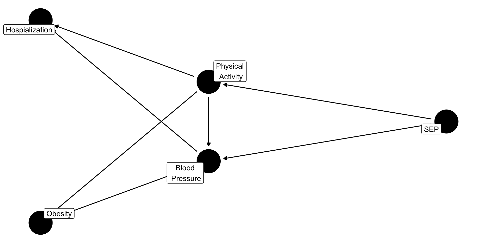
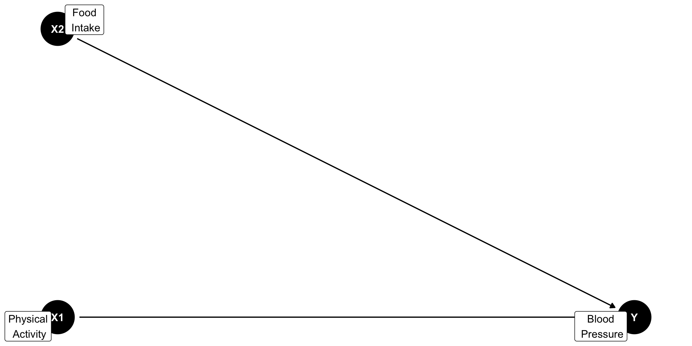
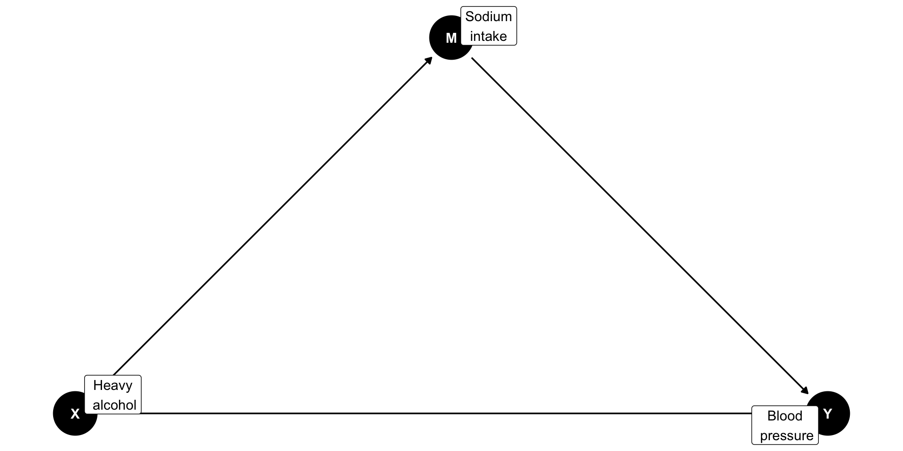
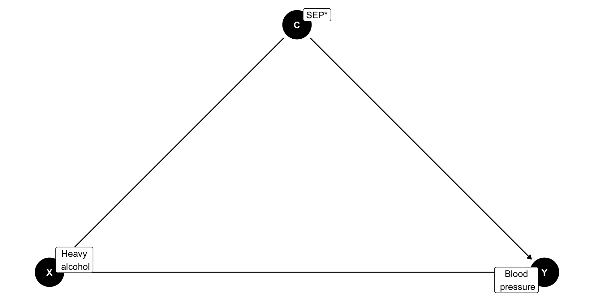
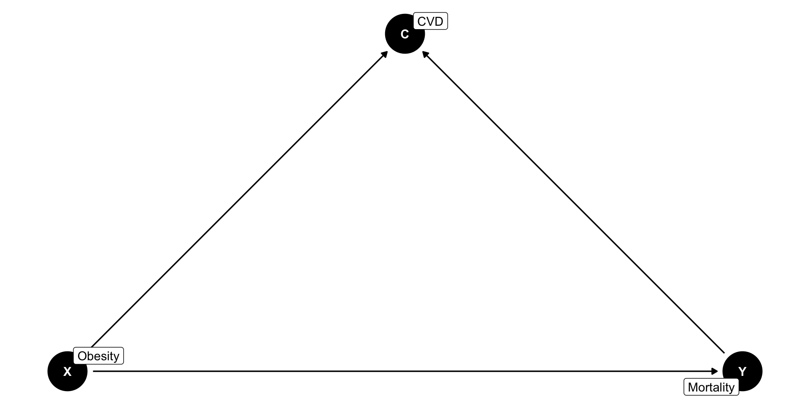
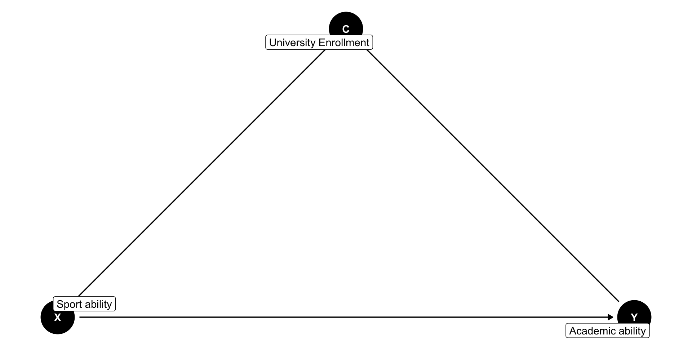
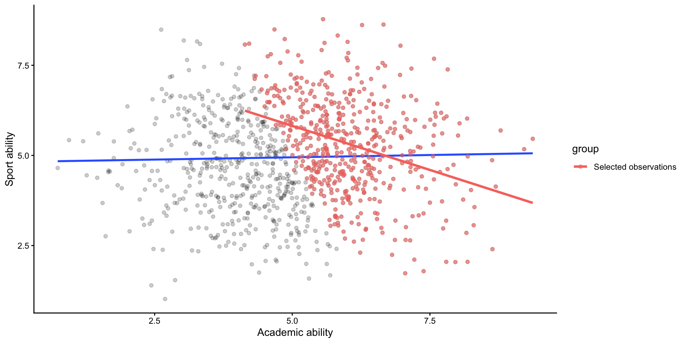

rownames | seqn | qsmk | death | yrdth | modth | dadth | sbp | dbp | sex | age | race | income | marital | school | education | ht | wt71 | wt82 | wt82_71 | birthplace | smokeintensity | smkintensity82_71 | smokeyrs | asthma | bronch | tb | hf | hbp | pepticulcer | colitis | hepatitis | chroniccough | hayfever | diabetes | polio | tumor | nervousbreak | alcoholpy | alcoholfreq | alcoholtype | alcoholhowmuch | pica | headache | otherpain | weakheart | allergies | nerves | lackpep | hbpmed | boweltrouble | wtloss | infection | active | exercise | birthcontrol | pregnancies | cholesterol | hightax82 | price71 | price82 | tax71 | tax82 | price71_82 | tax71_82 | id | censored | older |
|---|---|---|---|---|---|---|---|---|---|---|---|---|---|---|---|---|---|---|---|---|---|---|---|---|---|---|---|---|---|---|---|---|---|---|---|---|---|---|---|---|---|---|---|---|---|---|---|---|---|---|---|---|---|---|---|---|---|---|---|---|---|---|---|---|---|---|---|
1 | 233 | 0 | 0 | 175 | 96 | 0 | 42 | 1 | 19 | 2 | 7 | 1 | 174.1875 | 79.04 | 68.94604 | -10.093960 | 47 | 30 | -10 | 29 | 0 | 0 | 0 | 0 | 1 | 1 | 0 | 0 | 0 | 0 | 1 | 0 | 0 | 0 | 1 | 1 | 3 | 7 | 0 | 1 | 0 | 0 | 0 | 0 | 0 | 1 | 0 | 0 | 0 | 0 | 2 | 2 | 197 | 0 | 2.183594 | 1.739990 | 1.1022949 | 0.4619751 | 0.44378662 | 0.6403809 | 1 | 0 | 0 | ||||
2 | 235 | 0 | 0 | 123 | 80 | 0 | 36 | 0 | 18 | 2 | 9 | 2 | 159.3750 | 58.63 | 61.23497 | 2.604970 | 42 | 20 | -10 | 24 | 0 | 0 | 0 | 0 | 0 | 0 | 0 | 0 | 0 | 0 | 0 | 0 | 0 | 0 | 1 | 0 | 1 | 4 | 0 | 1 | 0 | 0 | 0 | 0 | 0 | 0 | 0 | 0 | 1 | 0 | 0 | 2 | 301 | 0 | 2.346680 | 1.797363 | 1.3649902 | 0.5718994 | 0.54931641 | 0.7929688 | 2 | 0 | 0 | ||||
3 | 244 | 0 | 0 | 115 | 75 | 1 | 56 | 1 | 15 | 3 | 11 | 2 | 168.5000 | 56.81 | 66.22449 | 9.414486 | 51 | 20 | -14 | 26 | 0 | 0 | 0 | 0 | 0 | 0 | 0 | 0 | 0 | 1 | 0 | 0 | 1 | 0 | 1 | 3 | 4 | 0 | 1 | 1 | 0 | 0 | 1 | 0 | 0 | 0 | 0 | 0 | 0 | 2 | 0 | 2 | 157 | 0 | 1.569580 | 1.513428 | 0.5512695 | 0.2309875 | 0.05619812 | 0.3202515 | 3 | 0 | 1 | ||||
4 | 245 | 0 | 1 | 85 | 2 | 14 | 148 | 78 | 0 | 68 | 1 | 15 | 3 | 5 | 1 | 170.1875 | 59.42 | 64.41012 | 4.990117 | 37 | 3 | 4 | 53 | 0 | 0 | 0 | 0 | 1 | 0 | 0 | 0 | 0 | 0 | 0 | 0 | 0 | 0 | 1 | 2 | 3 | 4 | 0 | 0 | 1 | 1 | 0 | 0 | 0 | 0 | 0 | 0 | 0 | 1 | 2 | 2 | 174 | 0 | 1.506592 | 1.451904 | 0.5249023 | 0.2199707 | 0.05479431 | 0.3049927 | 4 | 0 | 1 | |
5 | 252 | 0 | 0 | 118 | 77 | 0 | 40 | 0 | 18 | 2 | 11 | 2 | 181.8750 | 87.09 | 92.07925 | 4.989251 | 42 | 20 | 0 | 19 | 0 | 0 | 0 | 0 | 0 | 0 | 0 | 0 | 0 | 0 | 0 | 0 | 0 | 0 | 1 | 2 | 1 | 2 | 0 | 1 | 0 | 0 | 0 | 0 | 0 | 0 | 1 | 0 | 0 | 1 | 1 | 2 | 216 | 0 | 2.346680 | 1.797363 | 1.3649902 | 0.5718994 | 0.54931641 | 0.7929688 | 5 | 0 | 0 |
Multiple Regression I: Variable Selection
Behavioral Research Methods 2
Eindhoven University of Technology
2026-08-28
Abstract
When conducting a multiple regression, researchers face an important question: What variables should I include in the model? This lecture introduces variable selection in multiple regression, with a focus on choosing predictors based on the research question. It first introduces different types of research questions, including causal, associational, and prediction questions. It then introduces Directed Acyclic Graphs (DAGs) and shows how they can help identify potential confounders and avoid inappropriate adjustment for mediators and colliders.
Lecture’s objectives
By the end of this lecture, you should be able to:
Identify the type of research question (causal, associational or prediction)
Identify the type of variables (predictors, mediators, confounders and colliders)
Be familiar with Directed Acyclical Graphs (DAGs) and how they can help identify potential confounders and avoid inappropriate adjustment for mediators and colliders
Simple regression
The simplest form of regression analysis can be expressed as:
\[Y_i = \beta_0 + \beta_1X_{1i} + \epsilon_i \]
Where \(Y_i\) = observed outcome, \(\beta_0\) = intercept, \(\beta_1\) = regression coefficient, \(X_{1i}\) = predictor and \(\epsilon_i\) = error term for observation \(i\)
Simple regression
It examines how a single independent variable predicts a single dependent variable.
For example, we can use regression to answer the research question: Does exercise reduces blood pressure?
\[\text{blood_pressure}_i = \beta_0 + \beta_1 \text{exercise} + \epsilon_i \]
Where Exercise is an categorical intervention variable (e.g., 0 = no exercise and 1 = exercise)
Multiple regression
When the model includes more than one predictor, it is called multiple or multivariable regression. It can be expressed as:
\[Y_i = \beta_0 + \beta_1X_{1i} + \beta_2X_{2i} + ... + \epsilon_i\]
Where \(\beta_1, \beta_2, \dots\) = regression coefficients and \(X_{1i}, X_{2i}, \dots\) = predictors and and \(\epsilon_i\) = error term for observation \(i\)
Multiple regression
It examines how a dependent variable is related to multiple independent variables, while adjusting or controlling for the other predictors in the model.
For example, we know that cholesterol and age may also influence blood pressure, so we include them in the model:
\[\text{blood_pressure}_i = \beta_0 + \beta_1 \text{exercise} + \beta_2 \text{cholesterol} + \beta_3 \text{age} + \epsilon \]
Where exercise is categorical (e.g., coded as 0/1) and cholesterol and age are a continuous variable
You are a researcher
Now, let’s suppose we are researchers working for the Ministry of Health, and we want to investigate the effect of an intervention on a health outcome.
We will use the
nhefsdataset as example. It contains data from The National Health and Nutrition Examination Survey Data I Epidemiologic Follow-up Study (NHEFS).The original dataset has 1629 rows and 68 variables.
nhefs dataset
Your job is to answer the question: Which variables explain systolic blood pressure (
sbp)?Which variables should we include in our model?
What variables to include in the model?
Not based on whether p < 0.05!
Selecting variables based solely on statistical significance is a mindless approach and should be avoided
It can increase the number of false positives (Type I error rate)
The answer is that it depends on your research question
Types of research questions
Causal questions
Aims to answer a well-defined, pre-specified question: “Does heavy alcohol consumption increase mortality?”
Focus on estimating the causal effect of an an intervention/exposure on an outcome
Variables should be selected based on causal assumptions, theory, and prior evidence
Confounding needs to be addressed through study design and/or appropriate adjustment
Causal questions
Causal questions can be studied using randomised controlled trials (RCTs) or observational studies
RCTs are generally preferred for establishing causal effects but they can be costly or unethical (e.g., randomly assigning people to smoke to study its effect on lung cancer)
Observational studies can also support causal inference, but confounding and other sources of bias are important limitations
Regression analysis is commonly used in observational studies because it can adjust for measured confounders by including them as covariates in the model
A side note on confounders
- The fact that a dataset like
nhefscontains many variables does not mean that all of the confounders have been measured
Type of confounder | Examples | Strategy |
|---|---|---|
Measured | Age and sex | Restriction; Matching; Stratification; Standardization; Regression analysis; Propensity scores |
Unmeasured but measurable | Smoking; Disease severity | External adjustment; Proxy measures; Imputation |
Unmeasurable | Frailty | Self-controlled design; Instrumental variable; Mendelian randomization; Active comparator; Regression discontinuity design; Sensitivity analyses |
A side note on observational studies
Observational studies are based on data collected without any intervention or manipulation by the researcher
The researcher has no control over the study design
Observational studies involve collecting data from existing sources (e.g., medical records, surveys, registries, etc.) or by observing participants in their natural environment
Observational studies can be prospective (data collected going forwward in time) or retrospective (data collected going backwards in time)
Exploratory /associational questions
Does not have a specific pre-specified hypothesis
Research questions often use wording such as:“What factors are associated with mortality?”
Examines multiple variables to identify potential associations
Findings are hypothesis-generating and should be confirmed in future research
This type of study can suffer from confounding and other source of bias, so causal claims should be avoided
Prediction questions
Asks: “How accurately can we predict risk of mortality in patients suffering from metabolic syndrome?”
Aims to build the best-performing model using available predictors
Uses observed data to make predictions about an outcome
Focuses on prediction accuracy, rather than estimating causal effects
The best model is the one that generalizes well to new, unseen data
Causal questions and DAGs

Directed Acyclic Graph (DAG)
DAGs consist of variables (nodes) and arrows (edges)
Nodes can represent interventions, exposures, outcomes, or other characteristics
Arrows represent known or hypothesised causal relationships between variables
Directed Acyclic Graph (DAG)
DAGs depict an investigator’s hypotheses or assumptions about:
how variables are causally related
how an intervention/exposure affects an outcome
which variables should be adjusted for (in other words, DAGs can inform statistical analysis)
Types of variables
When deciding which variables to include in a regression model, it is important to distinguish between:
Predictors
Mediators
Confounders
Colliders
These variables have very different implications for statistical adjustment.
Predictors
- A predictor (\(X\)) is a variable included in the model to explain the outcome (\(Y\))
Predictors in a DAG

Simulating predictors
set.seed(1234)
# Simulate data
data <- data.frame(food_intake = rnorm(200, 10, 2),
exercise = rnorm(200, 3, 3)) |>
mutate(blood_pressure = 7 + 0.4 * food_intake + 0.7 * exercise + rnorm(200, 0, 3))
# Display first 4 rows, round to 2 decimals
head(data, 4) |>
flextable() |>
colformat_double(j = c(1:3), digits = 2)food_intake | exercise | blood_pressure |
|---|---|---|
7.59 | 4.46 | 9.47 |
10.55 | 5.09 | 14.89 |
12.17 | 3.56 | 13.09 |
5.31 | 5.10 | 10.00 |
Regression model
# Run regression analysis and display output, rounded to 2 decimals
lm(blood_pressure ~ food_intake + exercise, data = data) |>
tidy() |>
select(term, estimate, p.value) |>
flextable() |>
colformat_double(j = c(2, 3), digits = 2) |>
color(i = 2, color = "blue", part = "body") |>
color(i = 3, color = "green", part = "body")term | estimate | p.value |
|---|---|---|
(Intercept) | 7.51 | 0.00 |
food_intake | 0.30 | 0.01 |
exercise | 0.76 | 0.00 |
Interpreting the predictors
Food intake: Holding
exerciseconstant, a one-unit increase in diet is associated with a 0.4-unit increase in blood pressure
Exercise: Holding
food_intakeconstant, a one-unit increase inexerciseis associated with a 0.7-unit increase in blood pressure
Mediator
A mediator is a variable that:
is influenced by the exposure (\(X\))
influences the outcome (\(Y\))
lies on the causal pathway between X and Y
adjusting for it removes the mediated effect from the estimated effect of \(X\)
Mediator in a DAG

Direct, Indirect and Total Effects
Direct effect
- The effect of \(X\) on \(Y\) not through \(M\) : \(X\) → Y
Indirect effect
- The effect of \(X\) on \(Y\) through \(M\): \(X\) → \(M\) → \(Y\)
Total effect
The overall effect of \(X\) on \(Y\), combining the direct and indirect effects:
- Total effect = Direct effect + Indirect effect
Simulating a mediator
set.seed(1234)
# Simulate data
data <- data.frame(
exposure = rnorm(200)
) |>
mutate(
mediator = 0.6 * exposure + rnorm(200, 0, 1),
outcome = 0.5 * exposure + 0.7 * mediator + rnorm(200, 0, 1)
)
# Display the first 4 observations, rounded to 2 decimals
head(data, 4) |>
flextable() |>
colformat_double(j = c(1, 2, 3), digits = 2)exposure | mediator | outcome |
|---|---|---|
-1.21 | -0.24 | -2.00 |
0.28 | 0.86 | 0.78 |
1.08 | 0.84 | 0.71 |
-2.35 | -0.71 | -2.57 |
Without adjusting for the mediator
term | estimate | p.value |
|---|---|---|
(Intercept) | -0.03 | 0.76 |
exposure | 0.94 | 0.00 |
This estimates the total effect of the exposure. This is the effect of interest when estimating the overall effect of an exposure or intervention.
Adjusting for the mediator
term | estimate | p.value |
|---|---|---|
(Intercept) | -0.09 | 0.23 |
exposure | 0.40 | 0.00 |
mediator | 0.76 | 0.00 |
This estimates the direct effect of the exposure (i.e., the effect of \(X\) on \(Y\) not through M). Adjusting for the mediator blocks the pathway \(X\) → \(M\) → \(Y\), so the model no longer estimates the total effect of \(X\) on \(Y\)
Confounder
A confounder is a variable that:
- is associated with the exposure (\(X\))
- is associated with the outcome (\(Y\))
- is not a consequence of the exposure
- can lead to biased estimates if not adjusted for
Confounder in a DAG

*SEP = socio-economic position
Confounding in practice
set.seed(1234)
# Simulate data
data <- data.frame(
covariate = sample(0:1, 100, replace = TRUE)
) |>
dplyr::mutate(
exposure = runif(100, 0, 1) + 0.3 * covariate,
outcome = 2.0 + 0.5 * exposure + 0.25 * covariate
)
# Display first 4 rows, rounded to 2 decimals
head(data, 4) |>
flextable() |>
colformat_double(j = c(2, 3), digits = 2)covariate | exposure | outcome |
|---|---|---|
1 | 0.34 | 2.42 |
1 | 0.87 | 2.68 |
1 | 0.58 | 2.54 |
1 | 0.50 | 2.50 |
Without adjusting for the confounder
term | estimate | p.value |
|---|---|---|
(Intercept) | 2.04 | 0.00 |
exposure | 0.65 | 0.00 |
Without adjusting for the confounder, the estimated effect is a biased estimate of the true effect size
Adjusting for the confounder
term | estimate | p.value |
|---|---|---|
(Intercept) | 2.00 | 0.00 |
exposure | 0.50 | 0.00 |
covariate | 0.25 | 0.00 |
Adjusting for the confounder results in an unbiased estimate of effect of the exposure
Collider
A collider is a variable that:
is caused by the exposure (\(X\))
is caused by the outcome (\(Y\))
is therefore a common consequence of both the exposure and the outcome
Adjusting for a collider can induce a spurious association between \(X\) and \(Y\)
Collider bias can arise through:
Study design: sampling, stratification or matching
Statistical analysis: adjusting for the collider in a regression model
An example: The Obesity Paradox
In the general population, the higher the body mass index higher the mortality risk
Previous research investigated whether obesity increase mortality among people with cardiovascular disease (CVD)
However, CVD can act as a collider because both obesity and other causes of mortality can contribute to CVD
Conditioning on CVD (e.g., by stratifying on disease status or by adjusting on multiple regression) can create the obesity paradox
Obesity paradox: among people with CVD, obesity may appear to be associated with lower mortality, despite being associated with higher mortality in the general population
Collider in a DAG

*CVD = Cardiovascular disease
The Obesity Paradox
| Analysis | RD (95% CI) |
|---|---|
| Crude | 0.05 (0.03, 0.07) |
| Adjusted — total population | 0.03 (0.02, 0.05) |
| Adjusted — CVD | −0.12 (−0.20, −0.04) |
| Adjusted — No CVD | 0.03 (0.01, 0.05) |
Simulating a collider
exposure | outcome | collider |
|---|---|---|
-1.21 | -1.21 | -2.90 |
0.28 | 0.30 | 0.53 |
1.08 | -1.54 | -0.51 |
-2.35 | 0.64 | -1.11 |
No conditioning on a collider
Exposure and outcome were simulated independently
Therefore, there is no true association between them

Without adjusting for the collider
term | estimate | p.value |
|---|---|---|
(Intercept) | 0.02 | 0.61 |
exposure | 0.06 | 0.07 |
No causal association between exposure and outcome
Conditioning on a collider through sampling

Adjusting for the collider
term | estimate | p.value |
|---|---|---|
(Intercept) | -0.01 | 0.56 |
exposure | -0.79 | 0.00 |
collider | 0.80 | 0.00 |
Adjusting for the collider creates a spurious association between exposure and outcome
Another example of collider bias

Conditioning on a collider through sampling

Conditioning on the collider (i.e., university enrollment) creates a spurious association between sports ability and academic ability
Recipe for an appropriate regression model
Start with the research question — what effect or association are you trying to estimate?
Adjust for relevant measured confounders that are common causes of the exposure and outcome
For the total effect of an intervention/exposure, do not adjust for mediators that lie on the causal pathway
Do not condition on colliders, either through sampling/selection or regression adjustment
References and further reading
Further reading includes Digitale et al. (2022) and Lewer et al. (2025)